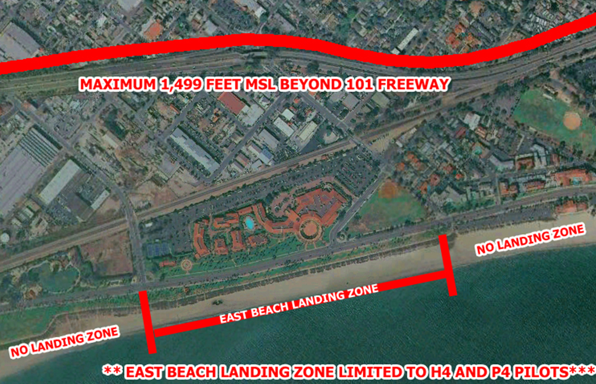

East Beach
Pilot Rating: H4/P4
East Beach
Pilot Rating: H4/P4
Landing
To avoid any potential incidents in a crowded area, pilots are asked to land on the ocean side of the bike path. Do not cross the path on approach and land on the grass. Walk, don’t kite, your glider from the sand to the grass to pack up.
Choose an approach and touch down spot far enough away from all other beach users to avoid collision or the perception of risk of collision.
Rules
East Beach is the only beach within Santa Barbara City limits approved as a landing zone. Land at any other beach within Santa Barbara city limits only if you cannot safely make the designated East Beach LZ.
Pilots should not:
- Approach over the bike path.
- Fold up on the jogging path.
- Leave any glider unattended unless it is fastened so that the wind cannot move it, and make certain the glider wires and lines are kept out of reach of curious children.
- Land at this site unless you are an advanced rated pilot (H4/P4) and current member of the USHPA.
Additional Guidance
Kite or ground handle at this site only if you are an intermediate rated pilot and a current member of the USHPA. Do not go on glide for the beach unless you are sure that you will arrive over the LZ with at least 500 feet AGL. Do not squeak in low. When in doubt, turn back early and land at a predetermined bailout LZ.
If the entire designated landing area is too busy for a safe landing and areas outside the boundaries are open, land outside of the boundary. When carrying a glider across the bike path, yield to other traffic. When at the landing area, actively assist other incoming pilots with condition reports and, if necessary, notify other beach users of the incoming traffic and probable traffic pattern.
To be effective assistance, pilots may need to use different radio frequencies. No motors, operating or not. Know where the local airspace is restricted and be aware of other air traffic, especially as you get closer to the beach. The most likely encounters would be from westbound traffic en route to Santa Barbara Airport. You must be under 1500 ft south of the 101 freeway.
Map
